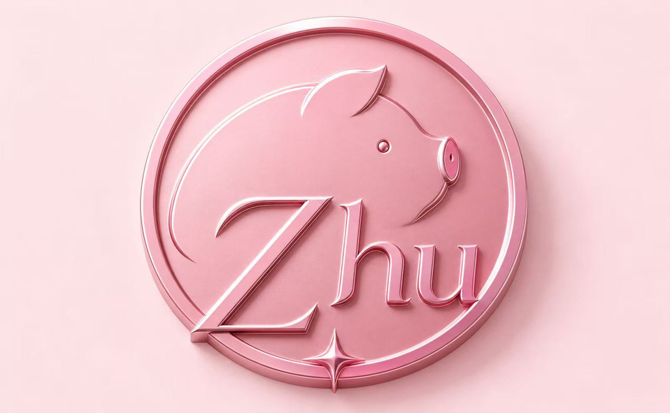

Exercise 05: Personal Branding
Date:
Build an identity that connects personality, values, visual choices and a future direction.
Research
- Studio Feixen
A reference for expressive typography and different visual approaches.
- Pentagram Work
Compare how identity systems extend beyond one logo into applications.
- W3C Contrast Minimum
A reference for checking text contrast on the website.
Add your own notes, screenshots and actual visit dates.
Process Work
Brand Foundation / supplied answers
| Question | zhujie’s direction |
|---|---|
| What type of designer do you want to become? | A Graphic Designer. |
| What are your three strongest qualities? | Creativity, Patience and Optimism. |
| What kind of work do you enjoy creating? | Poster Design. |
| Who would you like to work for or with? | Creative Studios. |
| What makes you different? | I am independent and determined, and I do not want to be limited to one style. |
Design Development
The logo design was supplied as a one-page Canva PDF on October 26, 2026. It presents a pink emblem within a decorated contact-card layout. The PDF records this digital design stage; earlier versions have not been supplied.
- The supplied graphic combines a circular pink emblem, a pig motif and decorative lettering.
- Pink also appears in the homepage draft, connecting the two supplied designs.
- The website displays the logo graphic and keeps its body text simple for reading.
- The statement and rationale below are review drafts based on the supplied personal direction and visible design.
Final Outcome
Personal Brand Statement 72 words / draft
I am zhujie, a graphic design student interested in poster design. I like designs that catch people’s attention and give them new ideas. I am creative, patient and optimistic. I have my own opinions and enjoy trying different styles. My brand, Soft Chaos, brings together soft pink colours and playful shapes. I hope to work in a creative studio after graduating in 2028, build experience and eventually start my own design studio.
Visual Identity / Soft Chaos
My Logo Design

Soft heart. Wild ideas.
Supporting Brand Palette
Proposed supporting display type. Logo lettering is retained as supplied.
Website text, dates and readable details.
Brand Rationale 111 words / draft
I chose a soft pink direction because I want my personal brand to feel cute, friendly and playful. My logo design uses a circular pink emblem, a pig shape and the word Zhu. These elements give the design a gentle character. Cream and cherry wine provide supporting colours for the website, with darker text helping people read the journal. The name zhujie stays visible in page titles and headings. I am independent and enjoy trying different styles, so Soft Chaos is a starting point that can grow with my work. This direction helps me introduce my personality to creative studios while I continue developing my poster design, branding and communication skills.
Reflection
Draft for review.
My homepage and logo both use pink, which gives them a connection. The logo has a cute character and detailed lettering, while the website uses simpler text for reading. I would test whether the logo is still clear at a small size and whether the full name zhujie is easy to recognise. I want the brand to feel personal while leaving room to try different styles.